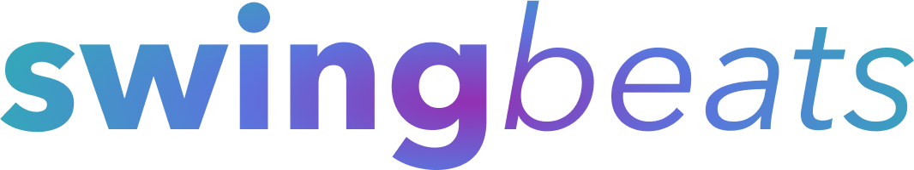

Riley Guioguio
rileyagon@gmail.com | linkedin | github
I'm actively seeking a position in software engineering. I'm interested in developing software that impacts others, and would love to work in industries like defense or SaaS. I have fullstack development experience working with a startup on Santa Clara's campus, and excel at backend development. My frontend expertise includes web technologies like HTML, CSS, and JavaScript. I am also proficient with backend technologies including Node.js, Python, and PHP. Thank you for visiting my portfolio. I look forward to connecting! -Riley
Professional Experience
